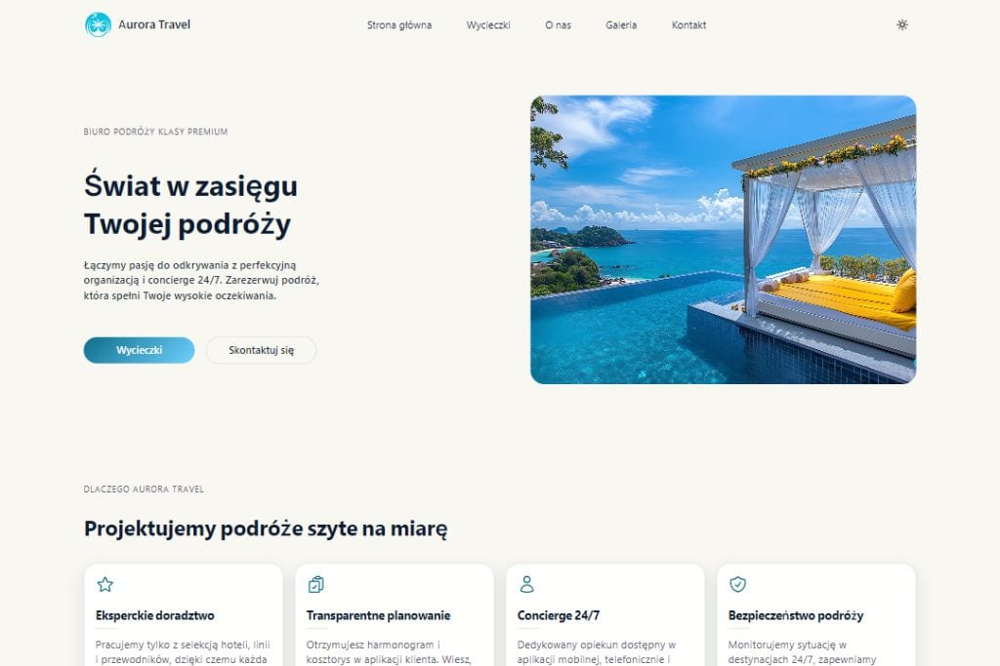

01
Aurora Travel
Nowoczesna strona z obszaru hotelarstwa i turystyki, która łączy atmosferę marki z lekką, klarowną prezentacją oferty i korzyści pobytowych.
Przegląd projektu
Aurora Travel została pomyślana jako estetyczna, nowoczesna strona dla marki turystycznej, która ma inspirować i jednocześnie zachować pełną czytelność.
Projekt koncentruje się na pokazaniu doświadczenia marki, jasnym układzie oferty oraz kompozycji wspierającej płynne przeglądanie serwisu na każdym urządzeniu.
Takie strony muszą balansować między warstwą aspiracyjną a konkretem potrzebnym użytkownikowi. Aurora Travel wykorzystuje spokojny rytm sekcji, czytelne bloki treści i odpowiednią ilość przestrzeni, by odbiór projektu pozostał lekki i premium.
To gotowy koncept portfolio, który może być później rozwijany o pakiety podróżne, rozbudowane galerie, sekcje lokalizacji czy bardziej szczegółowe ścieżki rezerwacyjne.
StronyBiznesTurystykaHospitality
Zakres i akcenty
Projekt wspiera markę przez połączenie atrakcyjnego odbioru wizualnego z uporządkowaną strukturą informacji.
02
Czytelne sekcje ofertowe
03
Gotowość do rozwoju
Technologie i standard
Architektura strony wspiera szybkość działania, mobilność i łatwe utrzymanie porządku w treści.
Statyczny frontend jest dobrym wyborem dla projektów wizerunkowo-ofertowych, ponieważ zapewnia wysoką wydajność i pozwala precyzyjnie zarządzać kompozycją oraz doświadczeniem użytkownika.
- semantyczne sekcje wspierające SEO i czytelność,
- responsywne układy przygotowane pod mobile i desktop,
- łatwo rozszerzalne komponenty i bloki treści.
Prezentacja wizualna
Główny kadr projektu pokazuje świeży, uporządkowany kierunek dla nowoczesnej marki turystycznej.

Dalszy krok
Sprawdź wersję live projektu albo wróć do pełnej listy realizacji.
Ta podstrona jest częścią spójnego systemu detail pages, który można łatwo rozwijać o kolejne projekty i case studies.